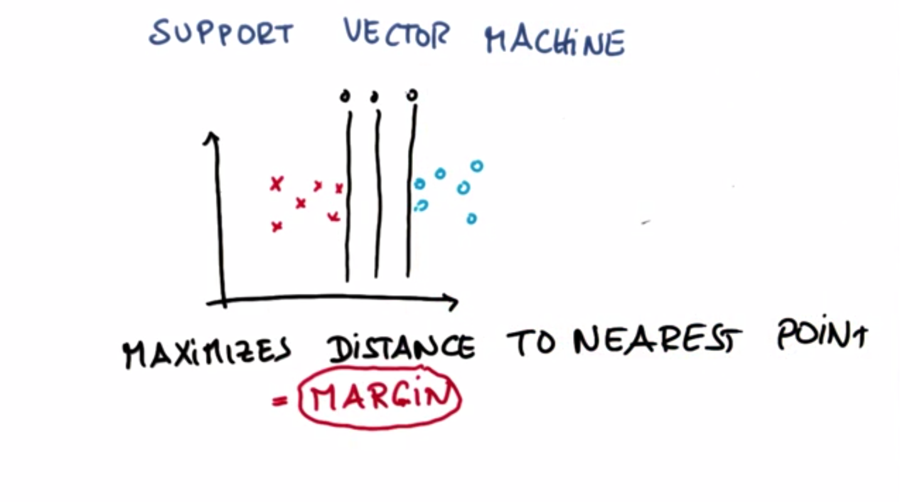

支持向量机（SVM）
Back to Home
01. 欢迎学习 SVM
02. 分隔线
03. 选择分隔线
04. 好的分隔线有何特点
05. 间隔练习
06. SVMs 和棘手的数据分布
07. SVM 对异常值的响应
08. SVM 异常值练习
09. 移交给 Katie
10. SKlearn 中的 SVM
11. SVM 决策边界
12. SVM 编码
13. 非线性 SVM
14. 非线性数据
15. 新特征
16. 可视化新特征
17. 与新特征分隔
18. 练习创建新特征
19. 核技巧
20. 尝试选择各种核
21. 核和伽玛
22. SVM C 参数
23. 过拟合
24. SVM 的优缺点
25. SVM 迷你项目简介
26. SVM 迷你项目
27. SVM 作者 ID 准确率
28. SVM 作者 ID 时间
29. 更小的训练集
30. 权衡速度与准确率
31. 部署 RBF 内核
32. 优化 C 参数
33. 优化 C 后的准确率
34. 优化后的 RBF 与线性 SVM：准确率
35. 从 SVM 提取预测
36. 预测有多少 Chris 的邮件？
37. 部署 SVM 最后提醒
Back to Home
05. 间隔练习
间隔练习
Question:
Start Quiz:

Solution:
INSTRUCTOR NOTE:
请选择最大分割直线。
Next Concept